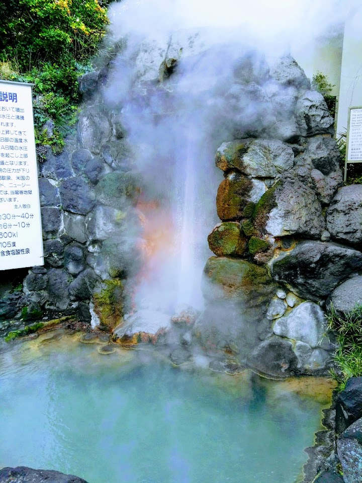
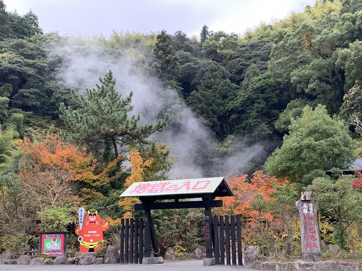
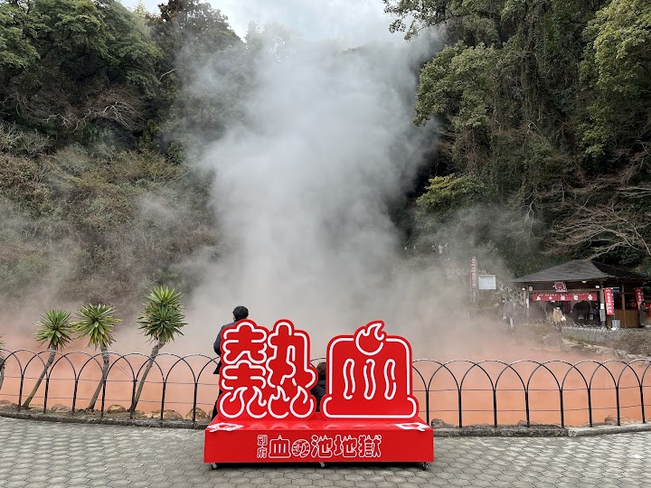
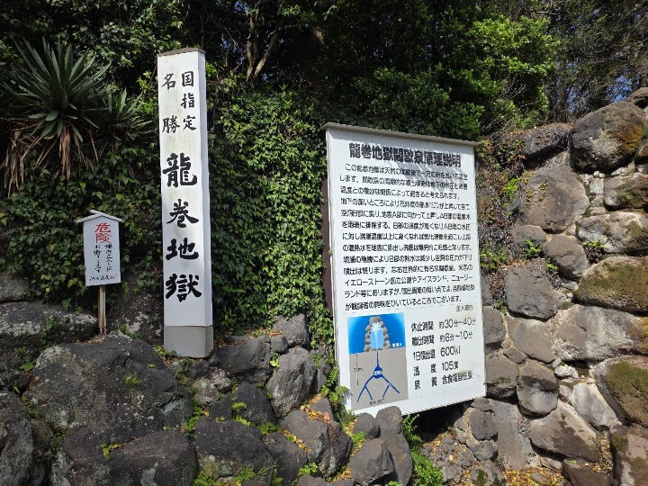
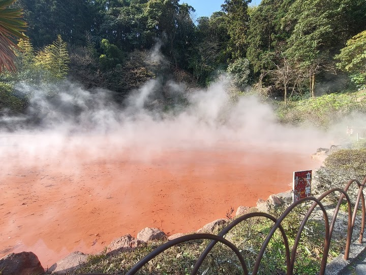

Chinoike Jigoku
Steaming thermal pool with dark-red water naturally colored by iron oxide & nearby foot baths
Open in Google Maps (street view, more photos and reviews there)






Visitor tips on finding it and getting there
The last jigoku that I visited in Hells of Beppu. It's not so big, but it has a foot bath option and also a big souvenir shop. If this is your last stop, you can buy a lot of things that you missed at the rest of jigokus. If you go for all the jigokus, consider buying an area pass. But the final price is very similar as sum of the separate entrance tickets.